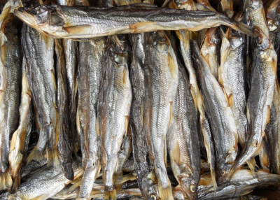

Продукция РК им.Котовского
(Цены на продукцию действуют с 01 января 2018 года)
Корюшка

Корюшка (зубатка) сушёно-вяленая весовая
Цена: 580 руб./кг.
(Цены на продукцию действуют с 01 января 2018 года)
Корюшка (зубатка) сушёно-вяленая весовая
Цена: 580 руб./кг.
Корюшка – рыба из семейства корюшковых. Ближайший родственник – стенок. У корюшки есть и альтернативные названия: нагыш и корешок. Чешуя корюшки мелкая и просвечивающаяся. На брюшке пластины желтовато-белые, а на спинке зеленовато-голубые. По описанию схоже не только со стенком, но и ельцом, уклейкой. Однако, на их спинах на один плавник меньше, чем у корюшки. Корюшка – большеротая рыба с рядами острых зубов. Зубы – свидетельство хищной натуры.
Корюшку относят к семейству лососевых. Это довольно живописная рыба, имеет зеленоватую спинку, которая слегка просвечивается, так как чешуя на спине не имеет серебристого пигмента. А вот бока рыбы серебристые с красивым голубым оттенком (калоризатор). В отличие от самок, нижняя челюсть у самцов более длинная, а в нерест плавники и голова самцов покрываются мелкими бородавочками. Местами обитания эта рыба выбрала холодные северные моря: Белое, Немецкое, Балтийское. Иногда встречается в крупных озерах северных стран. Живет крупными стаями.
Имеется несколько разновидностей корюшки, которые отличаются размерами и продолжительностью жизни. Это: Снеток (европейский вид). Его вес достигает в среднем 6-8 грамм, размер от 9 до 10 сантиметров, продолжительность жизни до трех лет. Это самый мелкий представитель. Азиатская (американская) зубатка. Вырастает до 35 сантиметров, весом одна особь может быть до 350 грамм, срок жизни - до 11 лет, самый крупный представитель. Морская малоротая. Это дальневосточная корюшка. Она средних размеров, до 25 сантиметров в длину, до 160 грамм весом. Срок жизни - до 8 лет. Дальневосточная корюшка отличается от двух других видов более маленьким ртом, выдвинутой вперед нижней челюстью, более коротким спинным плавником. Северо-западная часть Тихого океана - это основной ареал обитания дальневосточной корюшки. Часто корюшку можно встретить на Камчатке и в прибрежных водах, вплоть до севера Кореи. Облюбованы дальневосточной корюшкой и залив имени Петра Великого, южные Курильские острова, Сахалин. Встретить эту рыбку можно даже в водах Охотского моря.
В силу своих небольших размеров, корюшка питается мальками других рыб, икрой других рыб, рачками и личинками насекомых. Но основа её питания - это зоопланктон. Больше всего ест корюшка в летний и осенний период. Происходит это вблизи берегов ее мест обитания.
Мясо корюшки по праву может называться диетическим. Оно не содержит углеводов, но в нём достаточно белков (15,5 грамм в 100 граммах продукта) и жиров (4,5 грамма в 100 граммах продукта). Блюда из корюшки особенно рекомендуется употреблять пожилым людям.
Калорийность корюшки составляет 102 ккал на 100 грамм продукта.
Как продукт питания, корюшка имеет большой набор микроэлементов, таких как калий, железо, натрий, магний, фтор, молибден, хлор и фосфор. Также корюшка содержит много витаминов, особенно группы В, витамины A, D и другие. Людям пожилого возраста эта рыба будет особенно полезна.
Чтобы не купить несвежую корюшку, необходимо обратить пристальное внимание на глаза корюшки (если глаза корюшки влажные, яркие и наполненные — рыба свежая), на жабры (у свежей корюшки жабры чистые, красного или розового цвета, без слизи и неприятного запаха), на аромат (свежая корюшка имеет приятный огуречный запах), на внешний вид (кожа должна выглядеть увлажненной, упругой и блестящей, без посторонних пятен и дырок), на упругость (у свежей корюшки тушка упругая).